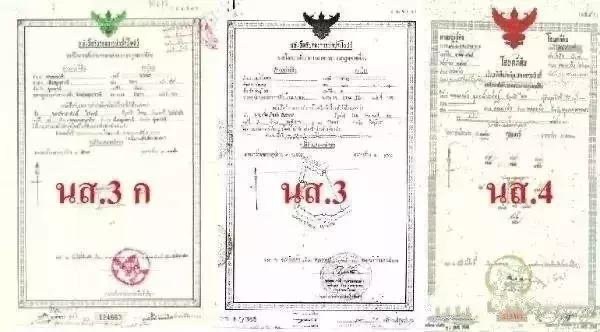
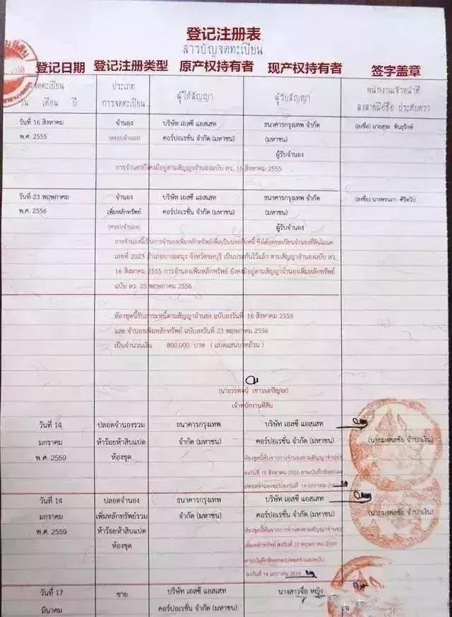
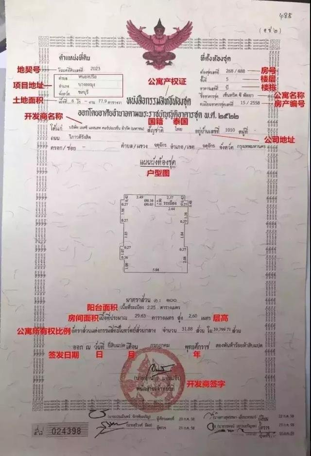
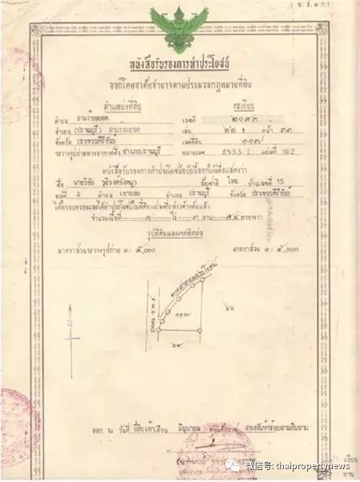

泰國 · 購屋知識
泰國的權狀（或稱地契）如台灣的謄本、所有權狀，只是泰國的權狀分為很多種。在泰國擁有土地特權必須有一定文件證明，這個文件就是土地契約，稱之為地契。
這個契約是土地局按照土地法頒發的土地特權文件，文件包括契約地圖、地契表和地契文案。地契文案內容在於說明該土地地主所有權已按照土地局蓋章，該地主可以買賣等私有特權。
泰國地契等同於國內買房意義上的產權證。地契上標註的地不是整個開發項目的地，而是您購買單元的地。地契中記錄了地塊形狀和邊界樁編號，以及歷史交易情況。以後房屋需要交易時，必須要提供這張地契。

泰國三種主要地契：นส.3 ก（左）、นส.3（中）、นส.4 Chanote（右）
下面介紹泰國常見的權狀種類。購買泰國房產時，最好挑選有 Chanote 權狀之不動產，次選 Nor Sor 3 Gor，再差也要有 Nor Sor 3 證書。
紅色
Chanote
Nor Sor 4
綠色
Nor Sor 3 Gor
黑色
Nor Sor 3
Chanote（Nor Sor 4）｜完整永久產權
โฉนดที่ดิน · 最高等級地契
Chanote 是泰國的權狀中，具有完整所有權的唯一一種，代表你可以自由買賣移轉、抵押貸款等行為。這種類型的產權證書賦予持有人對土地的 100% 所有權，並保證了對土地的獨占性，是最安全且最可靠的地契。
Nor Sor 3 Gor｜確認使用證書
นส.3 ก · 可買賣、可抵押
確認使用證書，亦可以買賣移轉、抵押貸款。在證書最上方有黑色 Garuda（泰國國徽），通常可以確認是 Nor Sor 3 Gor 證書。
這類證書只是一個非官方測量後、經土地部確認權利的證書，土地實際上還是泰國土地部所有，經申請調查，可以被申請升級為 Chanote 權狀。Nor Sor 3 Gor 也會在法定的審核時間結束後自動升級成為 Chanote。
Nor Sor 3｜使用證書
นส.3 · 買賣需公告 30 天
若要買賣移轉、抵押貸款等行為必須在土地部公告 30 天，且不能登記。在證書最上方有綠色 Garuda（泰國國徽），可確認是 Nor Sor 3 證書。
其他類型地契
Sor Por Gor、Sor Tor Gor、Gor Sor Nor 5 等
多達數十種，可能僅能作農業使用、土地重劃配回土地禁止轉讓、森林保護區或僅有少數使用權利。
此外，除了 Chanote 地契以外，其他產權證不允許任何針對該土地的租賃行為，如用益物權、抵押貸款或以獲得抵押為目的的地上權。
| 地契種類 | 公章顏色 | 測量方式 | 可買賣/抵押 | 佔有排除期限 |
|---|---|---|---|---|
| Chanote（Nor Sor 4） | 紅色 🔴 | GPS 精確測量 | ✓ 可自由買賣 | 10 年 |
| Nor Sor 3 Gor | 黑色 ⚫ | 土地廳測量 | ✓ 可買賣 | 1 年 |
| Nor Sor 3 | 綠色 🟢 | 未測量 | ⚠ 需公告 30 天 | 1 年 |
| 其他（Possessory Right） | — | 未測量 | ✗ 不可買賣 | — |
地契分為正反兩面，並且都是以泰文書寫的。
A 面・正面
此類地契的紅色 Logo 表示的是永久產權。
B 面・背面
記錄所有歷史交易與產權轉移記錄。

地契背面（B面）：登記注冊表，記錄歷次產權轉移、抵押與解除記錄
Chanote 是外國人在泰國購買公寓時會拿到的產權證書，以下是各欄位的對應說明。
Chanote 地契正面：各欄位標示說明（含 Chanote number、地塊平面圖、授權土地廳章）

公寓產權證（หนังสือกรรมสิทธิ์ห้องชุด）：標示地契號、房號、樓層、面積、開發商名稱等重要資訊

สมุดสรรพอากร（使用權證書）樣本，屬於早期地契格式
我們上面介紹的是單獨持分之不動產，通常在別墅、工廠、土地等類型不動產才有。若是區分所有權不動產如公寓也有權狀，但不會像台灣分為土地權狀與建物權狀，而是僅有一張權狀標明面積、高度、土地持分等，土地權狀只會有一張在管委會代為管理。
✅ 購買泰國房產時，最好挑選有 Chanote 權狀之不動產，並與律師到現場確認權狀號碼與地界編號（在平面圖上）。次選 Nor Sor 3 Gor，再差也要有 Nor Sor 3 證書。
⚠️ 泰國某些地方仍存在違建、偽造等非法行為，若涉及買賣等法律行為，應該要請當地律師陪同較能保障自己權益。